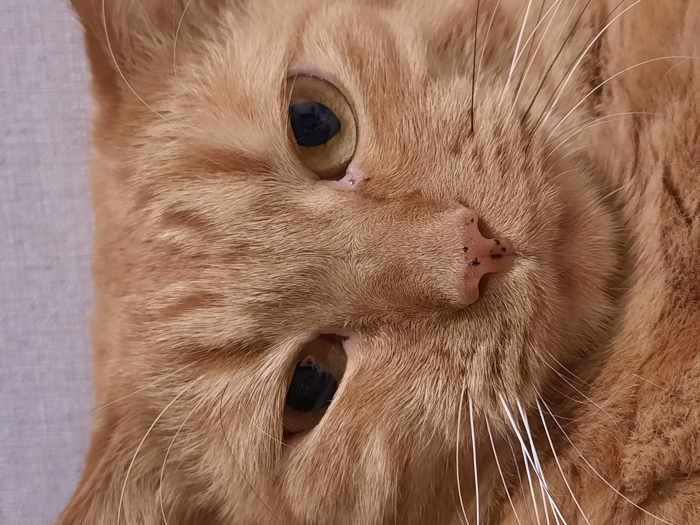

 Свежие новости. Получил наконец-то шенген. Хвастаюсь фоткой, как я классно на визу получился. Планирую в Европу через недельку на каникулы, накидайте деньжат мне на карту 3434 56565 67 78787, на европейские вкусняхи. С меня фотоотчет с комментариями.